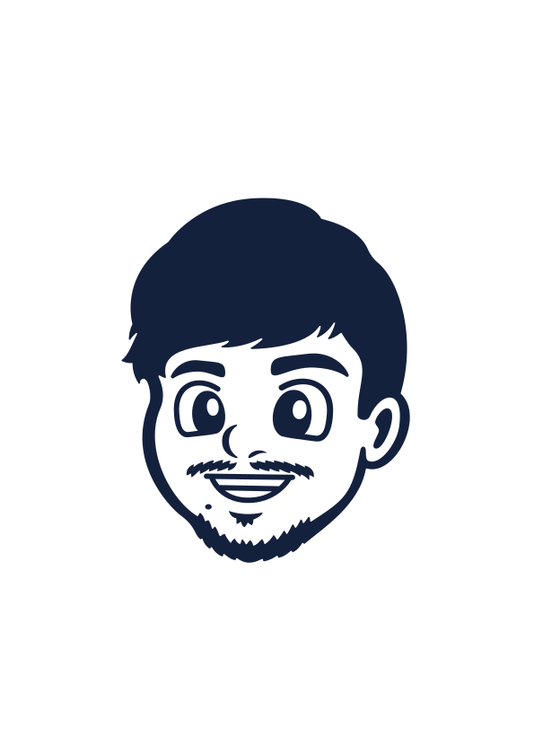
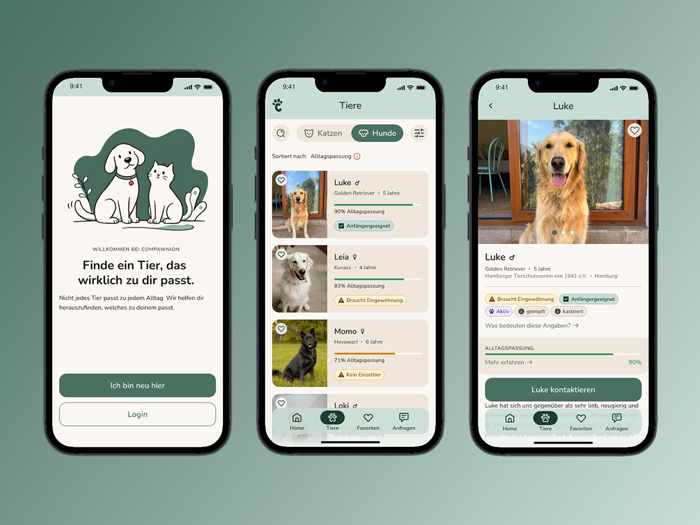
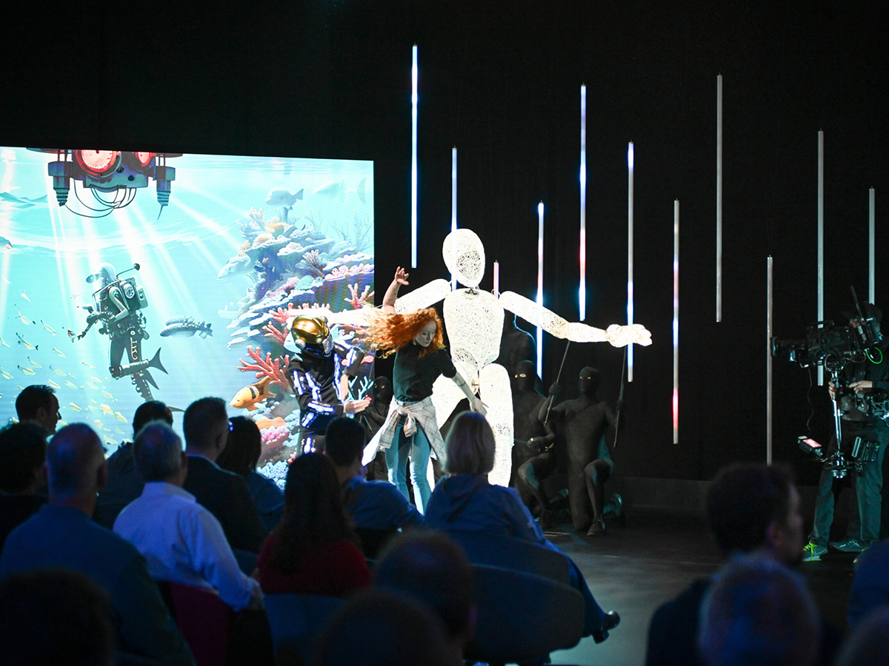
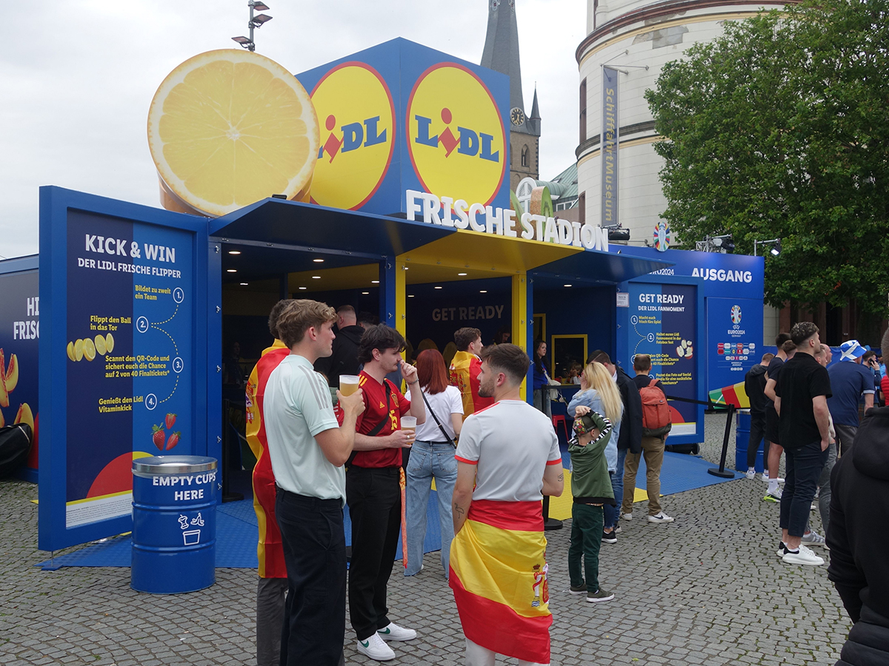
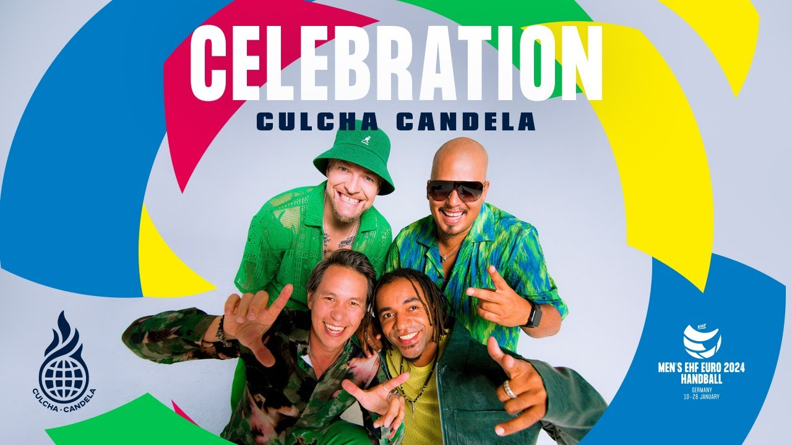

I give experiences a narrative structure.
Concept Creative from Hamburg. I develop live, hybrid and digital formats, from the first idea to the moment it meets an audience.
My work is the logic underneath: story, dramaturgy, and the path people take through it.
Let's Talk
What I’ve been making.

Pet adoption that fits your life. A mobile app that helps first-time adopters find the right shelter animal by honestly mapping daily life before browsing.

A five-minute opening show that frames artificial intelligence not as a threat, but as a superpower waiting to be claimed.

A modular fan activation system for Europe’s biggest football tournament, where freshness had to compete with 50,000 fans, rival sponsors, and UEFA catering rules.

Turning a handball opening match into a community moment — with a song, a call to participate, and 50,000 people singing along.
Moin, I’m Benedikt.
Nice to meet you!
I’m a Concept Creative with several years of experience in live communication: live events, digtal and hybrid formats, 360° campaigns. I translate brand values and messages into experiences that stay with people, with interactions that feel intuitive and moments that leave an impression.
In practice, that means deciding what people see first, what they feel next, and where the story needs to hold still or turn.
When I’m not developing ideas or down some AI rabbit hole, I'm wandering around Hamburg with one of my analogue cameras.